Loading Raw Data¶
At the core of timesoft’s tools for working with TIME data is the timesoft.Timestream class, which provides tools for loading both raw (level 0) data and previously processed timestream (level 1) data. Here we provide a tutorial for using this class to access TIME data files and perform some common data processing tasks.
We can get started by loading in some raw data. The raw data for this demo can be found in TIME-analysis/timesandbox/demo/ in the file 20220204_mars_focus_1.50.zip. Unzip this file to create the TIME-analysis/timesandbox/demo/20220204_mars_focus_1.50 directory.
Then we can import Timestream and create a Timestream instance for working with this data.
(Note: the netCDF4 package can generate a large number of warnings when loading data. Cells in this demo which load raw data often have the IPython magic %%capture _ at the top in order to prevent these messages from being printed)
[1]:
%%capture _
from timesoft import Timestream
# Load raw data for a focus check on Mars:
path_to_raw_data = "20220204_mars_focus_1.50/"
ts_demo = Timestream(path_to_raw_data,mc=0)
By default, Timestream inspects the path you provide and attempts to determine if you are loading raw data (from .nc netCDF files) or processed data (from .npz files created when data processed with timesoft functionality is saved). In this case, since the path specified is a directory and not an .npz file, it assumes correctly that we want to import raw data.
Once we have the data loaded we can get some basic information about it using the print function:
[2]:
print(ts_demo)
timesoft.Timestream instance
source: unknown
observation: unknown scan type
detectors in dataset: 960
samples per detector: 37000 (cleaned data), 37000 (raw data)
current flags:
stored copy availabe: False
valid telescope data: True (coordinates represented in: apparent)
scans identified: False
filtering applied: False (filtering type: none)
maps constructed: False
linemaps constructed: False
We see a variety of information about the observation performed, the detectors available, and the flags indicating what processing has been performed on the dataset so far (none since we just loaded the raw data).
In this example, because we’re using data from the engineering run where some header data is missing, a number of fields read “unknown”. Most of these are not used by the built-in methods, for Timestream, but they are useful header information to have. We’ll see how to edit the header information in a moment.
The initialization of Timestream has a number of tools for controlling the dataset produced. For example, you can see above that our dataset contained information for 960 detectors - that’s every detector in the first spectrometer. Many of these were not in use during the engineering run, so loading and working with them all is overkill. You can instead specify a list of detectors to load using either the xf parameter (list in feedhorn-frequency coordinates) or the cr parameter (list
in readout column-row coordinates).
We can also store an uneditted copy of the data as part of the Timestream class using the store_copy. This is useful for reducing data interactively, as it allows for resetting the data without reloading the raw data (which can be slow for large files).
Here we load the data from our Mars observation, restricted to the detectors in feedhorn 7 and keeping a copy of the raw data.
[3]:
%%capture _
# Load only the detectors from the 7th feedhorn:
xf = [(7,f) for f in range(60)]
ts_demo = Timestream(path_to_raw_data,mc=0,xf=xf,store_copy=True)
[4]:
print(ts_demo)
timesoft.Timestream instance
source: unknown
observation: unknown scan type
detectors in dataset: 60
samples per detector: 37000 (cleaned data), 37000 (raw data)
current flags:
stored copy availabe: True
valid telescope data: True (coordinates represented in: apparent)
scans identified: False
filtering applied: False (filtering type: none)
maps constructed: False
linemaps constructed: False
Saving and Loading Processed Timestream Data¶
Once we have done some processing on a timestream it is useful to save it so we can resume our analysis at a later time. Additionally it may be useful to pass off the processed data to someone else or store the processed data indefinitely. The Timestream class has a built in format for saving data.
[5]:
path_to_processed_data = "./"
file_name = "ts_demo.npz"
ts_demo.write(path_to_processed_data+file_name,store_copy=True)
This wrote the timestream data, including all processing applied, to a .npz file. Since we had only loaded the feedhorn 7 detectors, only those detectors will appear in the saved file. In addition, since we initialized our data with a stored second copy, we can set the store_copy parameter of Timestream.write to True, in order to make that available when we reload the data (we could instead set it to False if we no longer needed the copy and wanted to save space).
We can then reload this data by creating a new timestream instance.
[6]:
ts_demo = Timestream(path_to_processed_data+file_name,store_copy=True)
print(ts_demo)
timesoft.Timestream instance
source: unknown
observation: unknown scan type
detectors in dataset: 60
samples per detector: 37000 (cleaned data), 37000 (raw data)
current flags:
stored copy availabe: True
valid telescope data: True (coordinates represented in: apparent)
scans identified: False
filtering applied: False (filtering type: none)
maps constructed: False
linemaps constructed: False
We could here have specified not to load the stored copy (store_copy=False) or further cut down the detectors by specifying xf/cr. Note that if we try to specify a detector not present in the saved data, it will be ignored:
[7]:
xf = [(6,47),(7,47),(8,47)]
ts_demo = Timestream(path_to_processed_data+file_name,store_copy=True,xf=xf)
print("We requested detectors {}".format(xf))
print("The loaded detectors are {}".format(ts_demo.header['xf_coords']))
We requested detectors [(6, 47), (7, 47), (8, 47)]
The loaded detectors are [(7, 47)]
/Users/rpkeenan/Dropbox/4_research/3.1_TIME_analysis/TIME-analysis/timesoft/helpers/_class_bases.py:158: UserWarning: Detector xf=(6, 47) is not in the dataset, skipped when loading
warnings.warn("Detector {}={} is not in the dataset, skipped when loading".format(det_coord_mode,id))
/Users/rpkeenan/Dropbox/4_research/3.1_TIME_analysis/TIME-analysis/timesoft/helpers/_class_bases.py:158: UserWarning: Detector xf=(8, 47) is not in the dataset, skipped when loading
warnings.warn("Detector {}={} is not in the dataset, skipped when loading".format(det_coord_mode,id))
For the remainder of this demo we will use just the detectors at frequency index 47. Restricting the data we use to just these detector will improve the speed of the code.
[8]:
%%capture _
# Detectors we'll use from here on:
xf = [(x,47) for x in range(16)]
ts_demo = Timestream(path_to_raw_data,mc=0,xf=xf,store_copy=True)
Interacting with the Timestream Data¶
Now that we have the detectors we want loaded in a Timestream instance, we can start interacting with the data. Each Timestream instance has a few different attributes where the data is kept.
First is the header (Timestream.header), which is a dictionary containing some summary information about the observation, a listing of the loaded detectors, and flags detailing what analysis has been performed.
To start with, we can see what information is in the header:
[9]:
print(ts_demo.header.keys())
dict_keys(['mc', 'n_detectors', 'n_samples', 'med_time', 'observer', 'object', 'datetime', 'detector_pars', 'scan_pars', 'original_data_path', 'original_files_in', 'filesystem_version', 'xf_coords', 'cr_coords', 'center_ra', 'center_dec', 'epoch', 'filter_type', 'flags'])
Most of the time, the any information from the header is kept up to date automatically by the built in methods of the Timestream class. It can be used to recall information about the observation. For example:
[10]:
print("ts_demo contains data from an observation of {} conducted by {}".format(ts_demo.header['object'],ts_demo.header['observer']))
print("We currently have {} detectors loaded: xf={}".format(ts_demo.header['n_detectors'],ts_demo.header['xf_coords']))
print("The timestream contains {} samples".format(ts_demo.header['n_samples']))
ts_demo contains data from an observation of unknown conducted by obs
We currently have 16 detectors loaded: xf=[(0, 47) (1, 47) (2, 47) (3, 47) (4, 47) (5, 47) (6, 47) (7, 47) (8, 47)
(9, 47) (10, 47) (11, 47) (12, 47) (13, 47) (14, 47) (15, 47)]
The timestream contains 37000 samples
Our target is still listed as unknown instead of Mars. We can fix that using the Timestream.header_entry method (you can also edit the dictionary directly). By default, Timestream.header_entry prevents modifications of existing fields to prevent accidental overwrites of important information. We can disable this protection, since we know we want to overwrite the ‘object’ information.
[11]:
ts_demo.header_entry('object','Mars',protect=False)
ts_demo.header_entry('observer','rpk',protect=False)
print("ts_demo contains data from an observation of {} conducted by {}".format(ts_demo.header['object'],ts_demo.header['observer']))
print("We currently have {} detectors loaded: xf={}".format(ts_demo.header['n_detectors'],ts_demo.header['xf_coords']))
print("The timestream contains {} samples".format(ts_demo.header['n_samples']))
ts_demo contains data from an observation of Mars conducted by rpk
We currently have 16 detectors loaded: xf=[(0, 47) (1, 47) (2, 47) (3, 47) (4, 47) (5, 47) (6, 47) (7, 47) (8, 47)
(9, 47) (10, 47) (11, 47) (12, 47) (13, 47) (14, 47) (15, 47)]
The timestream contains 37000 samples
Data from the telescope and the receiver are recorded in a group of time-ordered arrays. If you just want to access the raw data you can do so using the attributes: * timestream.t - timestamp for each point (taken from the detector data) * timestream.ra - RA corresponding to each timestep (taken from the telescope and interpolated to the detector timestamps) * timestream.dec - declination corresponding to each timestep (taken from the telescope and interpolated to the detector
timestamps) * timestream.az - azimuth corresponding to each timestep (taken from the telescope and interpolated to the detector timestamps) * timestream.el - telescope elevation corresponding to each timestep (taken from the telescope and interpolated to the detector timestamps) * timestream.tel_flags - telescope flag corresponding to each timestep (taken from the telescope and interpolated to the detector timestamps) * timestream.data - data for each detector. By default,
the data is returned as a 2D array of shape (n_detectors, n_samples). The order of the first index is stored in timestream.header['xf_coords']
To demonstrate, here is a way to visualize the scan pattern of the telescope:
[12]:
import matplotlib.pyplot as plt
fig,axes = plt.subplots(2,3,figsize=(10,8))
fig.subplots_adjust(wspace=.6)
axes[0,0].set(xlabel='time [s]',ylabel='RA [degrees]')
axes[0,0].plot(ts_demo.t-ts_demo.t[0],ts_demo.ra)
axes[0,1].set(xlabel='time [s]',ylabel='Dec [degrees]')
axes[0,1].plot(ts_demo.t-ts_demo.t[0],ts_demo.dec)
axes[0,2].set(xlabel='RA [degrees]',ylabel='Dec [degrees]')
axes[0,2].plot(ts_demo.ra,ts_demo.dec)
axes[1,0].set(xlabel='time [s]',ylabel='Azimuth [degrees]')
axes[1,0].plot(ts_demo.t-ts_demo.t[0],ts_demo.az)
axes[1,1].set(xlabel='time [s]',ylabel='Elevation [degrees]')
axes[1,1].plot(ts_demo.t-ts_demo.t[0],ts_demo.el)
axes[1,2].set(xlabel='Azimuth [degrees]',ylabel='Elevation [degrees]')
axes[1,2].plot(ts_demo.az,ts_demo.el)
plt.show()
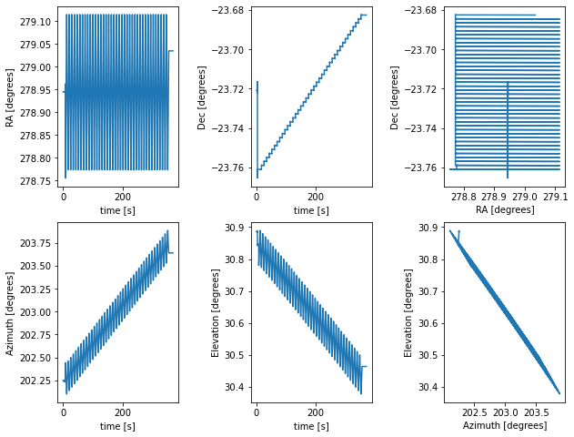
You can see that our map was constructed by using rows of constant declination and varrying RA. There is also some data at the begining collected while the telescope was moving to its starting location.
Accessing the detector data we want can be a little more tricky, since any Timestream instance can have different ordering of the data. To get around this, there are two helper methods, Timestream.get_xf and Timestream.get_cr that can determine the location of data for a detector specified in xf or cr coordinates respectively.
To plot the detector readout of detector xf=(7,47), we can do the following:
[13]:
idx = ts_demo.get_xf(7,47)
fig,ax = plt.subplots(figsize=(5,5))
ax.set(xlabel='Time [s]',ylabel='Detector Counts [arb]')
ax.plot(ts_demo.t-ts_demo.t[0],ts_demo.data[idx])
plt.show()
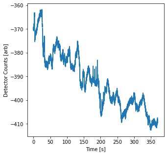
We can zoom in on the region around t=200 seconds, where the regularly spaced peaks correspond to the beam passing over Mars.
[14]:
fig,ax = plt.subplots(figsize=(5,5))
ax.set(xlabel='Time [s]',ylabel='Detector Counts [arb]',xlim=(150,225),ylim=(-410,-375))
ax.plot(ts_demo.t-ts_demo.t[0],ts_demo.data[idx])
plt.show()
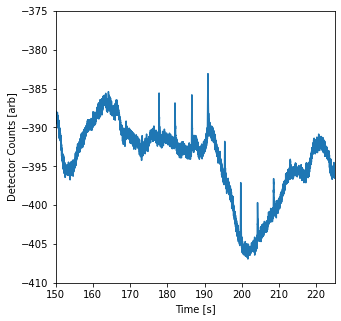
Note that if you use Timestream.get_xf or Timestream.get_cr to request the index of a detector not present in the Timestream instance, an error will be raised:
[15]:
idx = ts_demo.get_xf(0,0)
---------------------------------------------------------------------------
ValueError Traceback (most recent call last)
/var/folders/r4/gx0h7bk50dd0zv65hb5f4gb00000gn/T/ipykernel_98172/3624471615.py in <module>
----> 1 idx = ts_demo.get_xf(0,0)
~/Dropbox/4_research/3.1_TIME_analysis/TIME-analysis/timesoft/helpers/_class_bases.py in get_xf(self, x, f)
42 indices = np.nonzero(matches)[0]
43 if len(indices) == 0:
---> 44 raise ValueError('xf pair not found')
45 if len(indices) > 1:
46 warnings.warn("More than one instance of xf=({},{}) found".format(x,f))
ValueError: xf pair not found
Processing the Data¶
The main use of the timestream class is to process timestream data for flagging and cleaning. There are many built in features, but keep in mind that since timestream is a class, it can be extended, and you can create your own class based on it that includes additional capabilities.
The analysis methods provided by the timestream class are extensively documented, so we won’t go into great detail here. The following just shows an example of how they can be used to provide some intuition.
We can start by making a map from the data in one of our detectors to get an intuition for what is going on. The Timestream.make_map_det method quickly maps and plots an image of the data from a specified detector. Note that this is a tool for quickly visualizing the data, more sophisticated mapping of all detectors comes later in the process.
[16]:
print("Making a basic map")
ts_demo.make_map_det(7,47,pixel=.002,show=True) # Make a quicklook map of xf=(7,47)
Making a basic map
/Users/rpkeenan/Dropbox/4_research/3.1_TIME_analysis/TIME-analysis/timesoft/timestream/gridding_utils.py:161: FutureWarning: Using a non-tuple sequence for multidimensional indexing is deprecated; use `arr[tuple(seq)]` instead of `arr[seq]`. In the future this will be interpreted as an array index, `arr[np.array(seq)]`, which will result either in an error or a different result.
np.add.at(GRID,np.split(data_pos_mod,n,axis=1),np.expand_dims(data_value,1))
/Users/rpkeenan/Dropbox/4_research/3.1_TIME_analysis/TIME-analysis/timesoft/timestream/timestream_tools.py:1804: RuntimeWarning: invalid value encountered in true_divide
self.map_det = (grids[:,:,1]/grids[:,:,0]).T
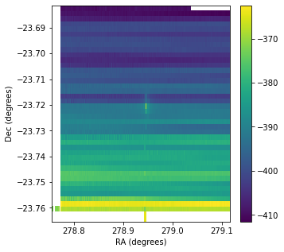
This isn’t pretty - the vertical streak in the middle is from the initial movement of the telescope as it moved to the starting position for the map. Timestream has some methods to identify when the telescope is observing the field in the intended scan pattern and remove data taken at other times. It can also do a variety of other cleaning tasks:
[17]:
print("Identifying Scans")
ts_demo.remove_obs_flag() # Get rid of points where the telescope wasn't in an "observing" mode
ts_demo.flag_scans() # Identify individual scans across the map
ts_demo.remove_scan_flag() # If data didn't appear to belong to a scan, drop it
ts_demo.remove_short_scans(thresh=100) # Remove anything that appears to short to be a real scan
ts_demo.remove_end_scans(n_start=4,n_finish=4) # Remove the first few scans and last few scans (ie top and bottom of the map)
ts_demo.remove_scan_edge(n_start=5, n_finish=5) # Remove a few data points from the edges of the scan, where the telescope may still be accelerating
print("Making a basic map")
ts_demo.make_map_det(7,47,pixel=.002,show=True) # Make a quicklook map of xf=(7,47)
Identifying Scans
Making a basic map
/Users/rpkeenan/Dropbox/4_research/3.1_TIME_analysis/TIME-analysis/timesoft/timestream/timestream_tools.py:747: UserWarning: Warning: scan direction is unknown, assuming RA
warnings.warn("Warning: scan direction is unknown, assuming RA")
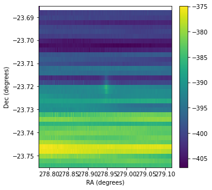
Now we can at least see Mars (the smudge in the middle), but there are streaks across the map that we still don’t want. These are caused by detector and atmospheric fluctuations. We can filter these out to make a better looking map:
[18]:
print("Filtering")
ts_demo.filter_scan(n=1) # Remove a 1st degree plynomial from each scan
print("Making a basic map")
ts_demo.make_map_det(7,47,pixel=.002,show=True) # Make a quicklook map of xf=(7,47)
Filtering
Making a basic map
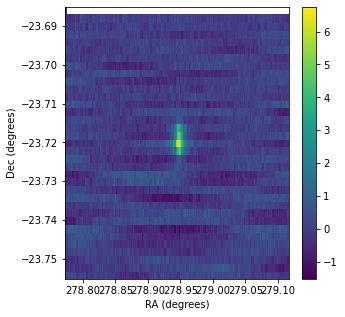
This is a significant improvement. We can see what happened by looking at the timestream of the raw data compared to the processed data (when they’ve been saved, the un-editied timestream and data are saved as Timestream.t_copy and Timestream.data_copy):
[19]:
import numpy as np
fig,[ax1,ax2] = plt.subplots(1,2,figsize=(10,5))
ax1.set(xlabel='time [s]',ylabel='Counts [arb]',title='Full Timestream')
ax2.set(xlabel='time [s]',ylabel='Counts [arb]',title='Zoomed In',xlim=(160,225),ylim=(-15,15))
# Plot raw data with median removed to make it easy to compare to the processed data:
ax1.plot(ts_demo.t_copy-ts_demo.t_copy[0],ts_demo.data_copy[ts_demo.get_xf(7,47)]-np.median(ts_demo.data_copy[ts_demo.get_xf(7,47)]),marker=',',label='Raw')
ax2.plot(ts_demo.t_copy-ts_demo.t_copy[0],ts_demo.data_copy[ts_demo.get_xf(7,47)]-np.median(ts_demo.data_copy[ts_demo.get_xf(7,47)]),marker=',',label='Raw')
# Plot the processed data
ax1.plot(ts_demo.t-ts_demo.t_copy[0],ts_demo.data[ts_demo.get_xf(7,47)],marker=',',label='Processed')
ax2.plot(ts_demo.t-ts_demo.t_copy[0],ts_demo.data[ts_demo.get_xf(7,47)],marker=',',label='Processed')
ax1.legend()
plt.show()
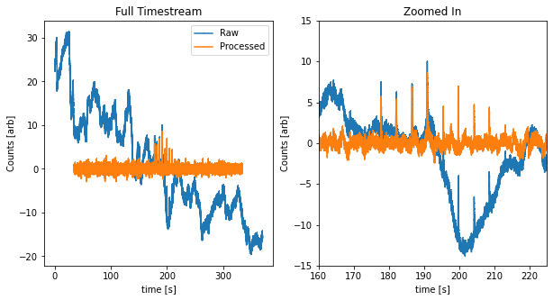
The processed timestream still shows some oscillations, but is already greatly improved compared to the raw data. For scientific analysis we will need more careful filtering. But for the time being, we can play around with the polynomial order we fit to each scan to see if that results in further improvements. We’ll reset our data and then re-run our processing with 5th degree polynomial filter:
[20]:
first_degree_filtered = np.copy(ts_demo.data) # Save a copy of the results of the 1st degree filtering
ts_demo.reset() # Then return data to original state, before our processing
print("Identifying Scans")
ts_demo.remove_obs_flag() # Get rid of points where the telescope wasn't in an "observing" mode
ts_demo.flag_scans() # Identify individual scans across the map
ts_demo.remove_scan_flag() # If data didn't appear to belong to a scan, drop it
ts_demo.remove_short_scans(thresh=100) # Remove anything that appears to short to be a real scan
ts_demo.remove_end_scans(n_start=4,n_finish=4) # Remove the first few scans and last few scans (ie top and bottom of the map)
ts_demo.remove_scan_edge(n_start=5, n_finish=5) # Remove a few data points from the edges of the scan, where the telescope may still be accelerating
print("Filtering")
ts_demo.filter_scan(n=5) # Remove a 5th degree plynomial from each scan
print("Making a basic map")
ts_demo.make_map_det(7,47,pixel=.002,show=True) # Make a quicklook map of xf=(7,47)
Identifying Scans
Filtering
/Users/rpkeenan/Dropbox/4_research/3.1_TIME_analysis/TIME-analysis/timesoft/timestream/timestream_tools.py:747: UserWarning: Warning: scan direction is unknown, assuming RA
warnings.warn("Warning: scan direction is unknown, assuming RA")
/Users/rpkeenan/Dropbox/4_research/3.1_TIME_analysis/TIME-analysis/timesoft/timestream/timestream_tools.py:1533: UserWarning: Filtering already applied, this filter will be applied on top of previous results
warnings.warn("Filtering already applied, this filter will be applied on top of previous results")
Making a basic map
/Users/rpkeenan/Dropbox/4_research/3.1_TIME_analysis/TIME-analysis/timesoft/timestream/gridding_utils.py:161: FutureWarning: Using a non-tuple sequence for multidimensional indexing is deprecated; use `arr[tuple(seq)]` instead of `arr[seq]`. In the future this will be interpreted as an array index, `arr[np.array(seq)]`, which will result either in an error or a different result.
np.add.at(GRID,np.split(data_pos_mod,n,axis=1),np.expand_dims(data_value,1))
/Users/rpkeenan/Dropbox/4_research/3.1_TIME_analysis/TIME-analysis/timesoft/timestream/timestream_tools.py:1804: RuntimeWarning: invalid value encountered in true_divide
self.map_det = (grids[:,:,1]/grids[:,:,0]).T
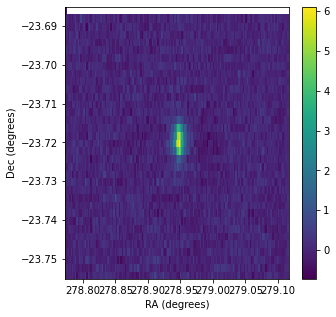
[21]:
fig,[ax1,ax2] = plt.subplots(1,2,figsize=(10,5))
ax1.set(xlabel='time [s]',ylabel='Counts [arb]',title='Full Timestream')
ax2.set(xlabel='time [s]',ylabel='Counts [arb]',title='Zoomed In',xlim=(160,225),ylim=(-15,15))
# Plot raw data with median removed to make it easy to compare to the processed data:
ax1.plot(ts_demo.t_copy-ts_demo.t_copy[0],ts_demo.data_copy[ts_demo.get_xf(7,47)]-np.median(ts_demo.data_copy[ts_demo.get_xf(7,47)]),marker=',',label='Raw')
ax2.plot(ts_demo.t_copy-ts_demo.t_copy[0],ts_demo.data_copy[ts_demo.get_xf(7,47)]-np.median(ts_demo.data_copy[ts_demo.get_xf(7,47)]),marker=',',label='Raw')
# Plot the old processed data
ax1.plot(ts_demo.t-ts_demo.t_copy[0],first_degree_filtered[ts_demo.get_xf(7,47)],marker=',',label='1st Degree')
ax2.plot(ts_demo.t-ts_demo.t_copy[0],first_degree_filtered[ts_demo.get_xf(7,47)],marker=',',label='1st Degree')
# Plot the processed data
ax1.plot(ts_demo.t-ts_demo.t_copy[0],ts_demo.data[ts_demo.get_xf(7,47)],marker=',',label='5th Degree')
ax2.plot(ts_demo.t-ts_demo.t_copy[0],ts_demo.data[ts_demo.get_xf(7,47)],marker=',',label='5th Degree')
ax1.legend()
plt.show()
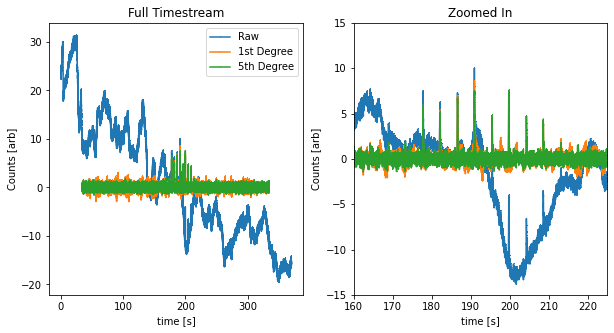
Coordinate Systems¶
TIME data is natively recorded in “apparent” coordinates, i.e. the coordinates on the real sky at a given date and time where the observations were made. Because these coordinates change over time, it is typically useful to convert data from apparent coordinates to a more meaningful system, such as the coordinates where a point in space would have appeared on January 1, 2000. This coordinate system is called “J2000”, and is the standard used throughout astronomy for reporting the location of sources in the sky.
The current system in which the Timestream.ra and Timestream.dec are represented is saved in the header as ‘epoch’. To convert our dataset from apparent to J2000 coordinates, we can use the Timestream.convert_coordinates method:
[22]:
print("The coordinates for our data were in the '{}' frame".format(ts_demo.header['epoch']))
ts_demo.convert_coordinates('J2000') # Convert to J2000
print("Now they are in the '{}' frame".format(ts_demo.header['epoch']))
The coordinates for our data were in the 'apparent' frame
Now they are in the 'J2000' frame
For our calibration image of Mars, the coordinate system does not really matter, but for making processing data for scientific analyses, ensuring the data is in the right coordinates is importang.
To switch back to apparent coordinates, we simply do the following:
[23]:
print("The coordinates for our data were in the '{}' frame".format(ts_demo.header['epoch']))
ts_demo.convert_coordinates('apparent') # Convert to J2000
print("Now they are in the '{}' frame".format(ts_demo.header['epoch']))
The coordinates for our data were in the 'J2000' frame
Now they are in the 'apparent' frame
Generating Maps¶
The end goal of a timestream analysis is often to generate an image of the mapped region. Maps, along with one dimensional ‘linemaps’ are the level 2 data products of TIME. The Timestream class can make these data products and also has a shorthand for creating the timesoft.Map and timesoft.LineMap objects that are purpose built for further processing and analyzing data in this form. To begin with, let’s generate maps for all of our detectors:
[24]:
ts_demo.make_map(pixel=0.002)
/Users/rpkeenan/Dropbox/4_research/3.1_TIME_analysis/TIME-analysis/timesoft/timestream/gridding_utils.py:161: FutureWarning: Using a non-tuple sequence for multidimensional indexing is deprecated; use `arr[tuple(seq)]` instead of `arr[seq]`. In the future this will be interpreted as an array index, `arr[np.array(seq)]`, which will result either in an error or a different result.
np.add.at(GRID,np.split(data_pos_mod,n,axis=1),np.expand_dims(data_value,1))
/Users/rpkeenan/Dropbox/4_research/3.1_TIME_analysis/TIME-analysis/timesoft/timestream/timestream_tools.py:1702: RuntimeWarning: invalid value encountered in true_divide
maps /= grids[:,:,-1].T
This simultaneously maps all of our loaded detectors and creates an instance of the Map class, which is stored (for now) as an attribute of the Timestream class: Timestream.Maps.
Timestream has a few methods for visualizing mapped data, the primary one is the Timestream.plot_map method, which can be used as follows:
[25]:
for xf in ts_demo.header['xf_coords']:
print("Map of detector xf={}".format(xf))
ts_demo.plot_map(xf[0],xf[1])
Map of detector xf=(0, 47)
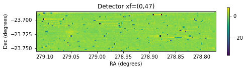
Map of detector xf=(1, 47)
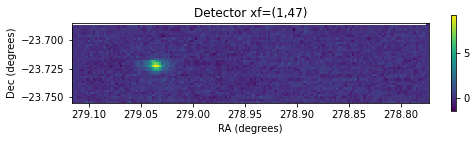
Map of detector xf=(2, 47)
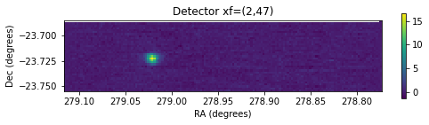
Map of detector xf=(3, 47)
Map of detector xf=(4, 47)
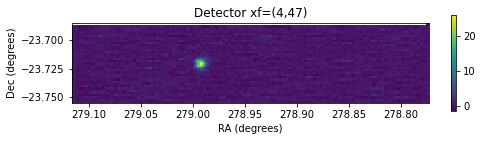
Map of detector xf=(5, 47)
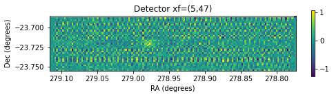
Map of detector xf=(6, 47)
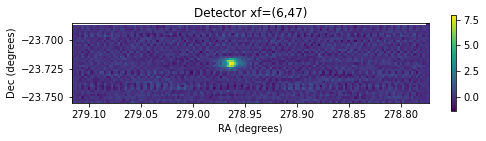
Map of detector xf=(7, 47)
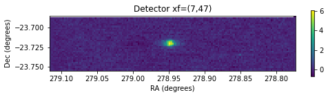
Map of detector xf=(8, 47)
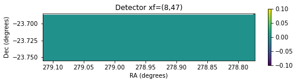
Map of detector xf=(9, 47)
Map of detector xf=(10, 47)
Map of detector xf=(11, 47)
Map of detector xf=(12, 47)
Map of detector xf=(13, 47)
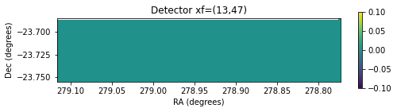
Map of detector xf=(14, 47)
Map of detector xf=(15, 47)
Plotting all of our maps, we can see that many detectors are turned off completely, a few are reporting data but not responding to the sky, and about 5 contain images of Mars.
Let’s restrict our analysis to just the good detectors. To do that we use the Timestream.restrict_detectors method to specify the detectors we want to keep (note that this will remove all data for the other detectors for the Timestream instance, including any stored copy).
[26]:
good_detectors = [(1,47),(2,47),(4,47),(6,47),(7,47)]
ts_demo.restrict_detectors(good_detectors,det_coord_mode='xf')
With that, we can plot only our good detectors using the same code as before. We can noe easily see how Mars moves across the focal plane in the detectors from five different feedhorns.
[27]:
for xf in ts_demo.header['xf_coords']:
print("Map of detector xf={}".format(xf))
ts_demo.plot_map(xf[0],xf[1])
Map of detector xf=(1, 47)

Map of detector xf=(2, 47)

Map of detector xf=(4, 47)

Map of detector xf=(6, 47)

Map of detector xf=(7, 47)

Many more map-space analyses are possible, but those are the purview of tools and documentation for level 2 data. We can leave off here by saving our maps for additional analysis in the future with the Timestream.write_map method:
[28]:
file_name = "ts_demo_maps.npz"
ts_demo.write_map(path_to_processed_data+file_name)
Generating Line Maps¶
Our planned science observations involve making one dimensional scans back and forth across a field. These line scans are often best analyzed by binning all the samples along a single positional axis (typically the scan directio). The Timestream class can make these data products using the Timestream.make_1d method, which also creates a timesoft.LineMap instance, stored in the Timestream.LineMaps attribute.
Our Mars data is natively in two dimensions, but we can still analyze it along only the scan direction. To start with, let’s cut our timestream down to only include declination ranges close to Mars. From the maps we made earlier, it appears that the flux from Mars all falls between about -23.73 and -23.71 degrees in declination.
[29]:
ts_demo._remove_samples(np.nonzero(ts_demo.dec<-23.71)[0])
ts_demo._remove_samples(np.nonzero(ts_demo.dec>-23.73)[0])
We can verify this worked by remaking our maps and plotting the results. Note that doing so will overwrite our old maps, so if we want to keep whatever maps we’ve already made, we’ll need to save them before doing this.
[30]:
ts_demo.make_map(pixel=0.002)
ts_demo.plot_map(7,47)
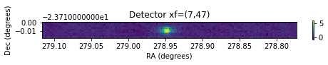
That looks good enough for this demonstration. We can now make our line maps:
[31]:
ts_demo.make_1d(pixel=.001)
/Users/rpkeenan/Dropbox/4_research/3.1_TIME_analysis/TIME-analysis/timesoft/timestream/timestream_tools.py:747: UserWarning: Warning: scan direction is unknown, assuming RA
warnings.warn("Warning: scan direction is unknown, assuming RA")
We can visualize the data for an arbitrary number of detectors using the Timestream.plot_1d method. This method takes a list of detectors to plot and produces plots of the average counts from each detector as a function of position.
Note that our data has not been flux calibrated, and so the scale for each detector can vary arbitrarily relative to the others.
[32]:
ts_demo.plot_1d(*good_detectors)
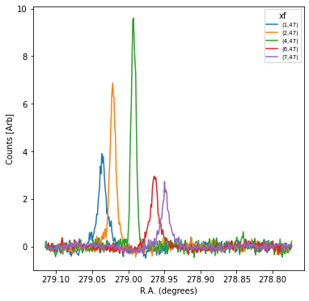
Saving our linemaps can be accomplished with the Timestream.write_1d method:
[33]:
file_name = "ts_demo_1d.npz"
ts_demo.write_1d(path_to_processed_data+file_name)
Extending the Timestream Class¶
One of the key reasons for construting our data analysis tools around a set of classes (Timestream, Map, Linemap, etc.) is that these objects can easily be expanded upon to add additional features.
There are many potential cases where it may be useful to add features. An immediate need is in the area of atmospheric corrections, where more sophisticated methods for filtering out atmospheric fluctuations are currently under development. Here we provide a template for extending the Timestream class with a new atmospheric filtering method (note that the method demonstrated here is actually just a simplification of the current one), to demonstrate how to go about extending the
Timestream class.
[34]:
class TimestreamExtension(Timestream):
def filter_scan_poly_2nd(self):
"""This function iterates through each detector and removes a 2nd degree polynomial from each scan"""
# Iterate through detectors and channels
for xf in self.header['xf_coords']:
index = self.get_xf(xf[0],xf[1])
# Iterate through each scan
for i in np.unique(self.scan_flags):
clean_inds = np.where(self.scan_flags==i)[0] # Determine which samples are part of scan i
t_mid = np.median(self.t[clean_inds]) # Median time in the scan for centering the polynomial fit
fit = np.polyfit(self.t[clean_inds]-t_mid, self.data[index][clean_inds], deg=2) # Fit the polynomial
self.data[index,clean_inds] -= np.polyval(fit,self.t[clean_inds]-t_mid) # Remove from the data
We can now repeat our initial data processing, but using the new filtering method. In the following, the only changes I make to the scripts used above are
Replacing
TimestreamwithTimestreamExtensionwhen initializing the classGiving the
TimestreamExtensioninstance a different name,ts_ext_demo(this is only done so a reference can be kept tots_demofor comparing with the revious results)Calling
ts_ext_demo.filter_scan_poly_2dinstead ofts_demo.filter_scan
This demonstrates the simplicity of adding new functionality and modifying pipelines built around the Timestream class.
[35]:
%%capture _
# Load only the detectors from the 7th feedhorn:
xf = [(7,f) for f in range(60)]
ts_ext_demo = TimestreamExtension(path_to_raw_data,mc=0,xf=xf,store_copy=True)
[36]:
print("Identifying Scans")
ts_ext_demo.remove_obs_flag() # Get rid of points where the telescope wasn't in an "observing" mode
ts_ext_demo.flag_scans() # Identify individual scans across the map
ts_ext_demo.remove_scan_flag() # If data didn't appear to belong to a scan, drop it
ts_ext_demo.remove_short_scans(thresh=100) # Remove anything that appears to short to be a real scan
ts_ext_demo.remove_end_scans(n_start=4,n_finish=4) # Remove the first few scans and last few scans (ie top and bottom of the map)
ts_ext_demo.remove_scan_edge(n_start=5, n_finish=5) # Remove a few data points from the edges of the scan, where the telescope may still be accelerating
print("Filtering")
ts_ext_demo.filter_scan_poly_2nd() # Remove a 2nd degree plynomial from each scan
# Compare the results
fig,[ax1,ax2] = plt.subplots(1,2,figsize=(10,5))
ax1.set(xlabel='time [s]',ylabel='Counts [arb]',title='Full Timestream')
ax2.set(xlabel='time [s]',ylabel='Counts [arb]',title='Zoomed In',xlim=(160,225),ylim=(-15,15))
# Plot raw data with median removed to make it easy to compare to the processed data:
ax1.plot(ts_ext_demo.t_copy-ts_ext_demo.t_copy[0],ts_ext_demo.data_copy[ts_ext_demo.get_xf(7,47)]-np.median(ts_ext_demo.data_copy[ts_ext_demo.get_xf(7,47)]),marker=',',label='Raw')
ax2.plot(ts_ext_demo.t_copy-ts_ext_demo.t_copy[0],ts_ext_demo.data_copy[ts_ext_demo.get_xf(7,47)]-np.median(ts_ext_demo.data_copy[ts_ext_demo.get_xf(7,47)]),marker=',',label='Raw')
# Plot the processed data
ax1.plot(ts_demo.t-ts_demo.t_copy[0],ts_demo.data[ts_demo.get_xf(7,47)],marker=',',label='filter_scan result')
ax2.plot(ts_demo.t-ts_demo.t_copy[0],ts_demo.data[ts_demo.get_xf(7,47)],marker=',',label='filter_scan result')
# Plot the processed data
ax1.plot(ts_ext_demo.t-ts_ext_demo.t_copy[0],ts_ext_demo.data[ts_ext_demo.get_xf(7,47)],marker=',',label='filter_scan_poly_2nd result')
ax2.plot(ts_ext_demo.t-ts_ext_demo.t_copy[0],ts_ext_demo.data[ts_ext_demo.get_xf(7,47)],marker=',',label='filter_scan_poly_2nd result')
ax1.legend()
plt.show()
Identifying Scans
Filtering
/Users/rpkeenan/Dropbox/4_research/3.1_TIME_analysis/TIME-analysis/timesoft/timestream/timestream_tools.py:747: UserWarning: Warning: scan direction is unknown, assuming RA
warnings.warn("Warning: scan direction is unknown, assuming RA")
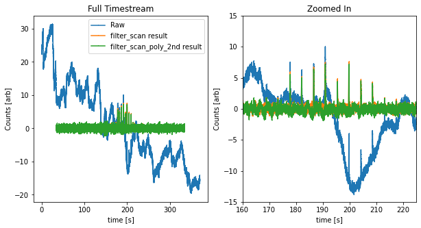
Having many different classes derived from Timestream can be confusing and inefficient. If you are developing extensions of the Timestream class that you believe will be of general use, you can use this model for developing new code, but once you think it is ready for prime time, you should try to integrate it directly into the Timestream class’s source code.